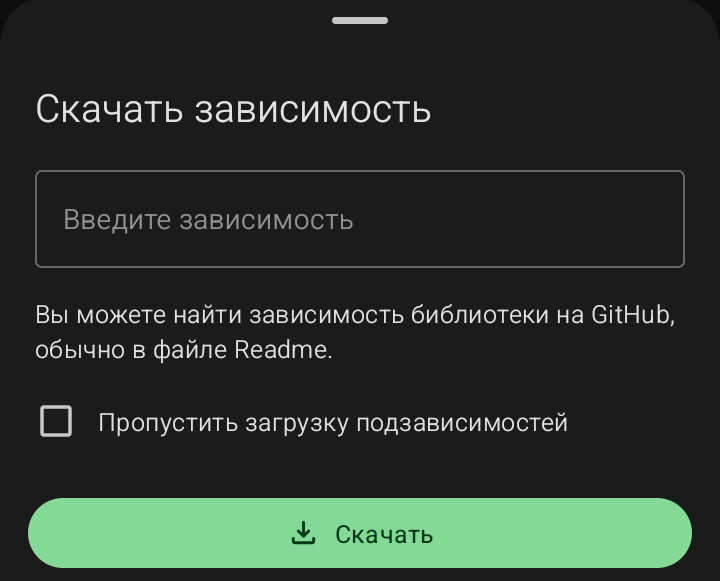

Менеджер локальных библиотек (Зависимости)
Этот менеджер позволяет подключать сторонние библиотеки (файлы .jar или .aar) для расширения возможностей ваших приложений.
· Пустой экран: Надпись «Нет доступных локальных библиотек» и кнопка «Скачать библиотеку».
·
Окно «Скачать зависимость»:

·
Введите зависимость:
Сюда вводится ссылка на библиотеку или её название (обычно берется с GitHub).
·
Пропустить загрузку подзависимостей:
Если включить, программа не будет скачивать библиотеки, от которых зависит основная.
·
Кнопка «Скачать»:
Начинает загрузку и установку библиотеки.